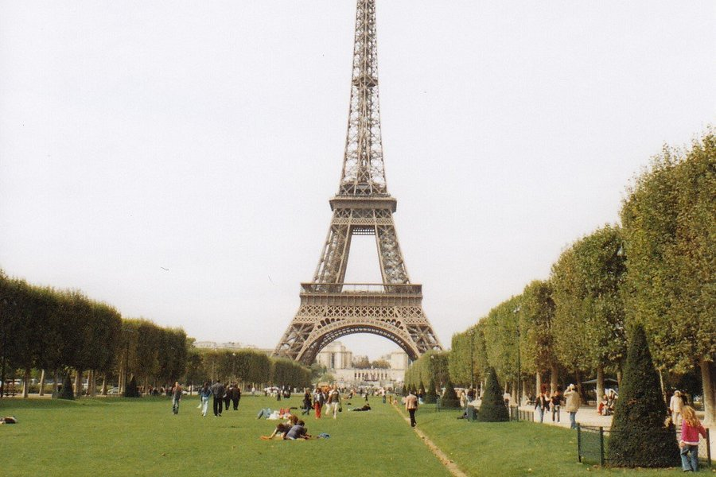
Tour Eiffel
Tours et plateformes d'observation, Monuments & Points d'intérêt
Les revenus influencent le choix des expériences présentées sur cette page : en savoir plus.
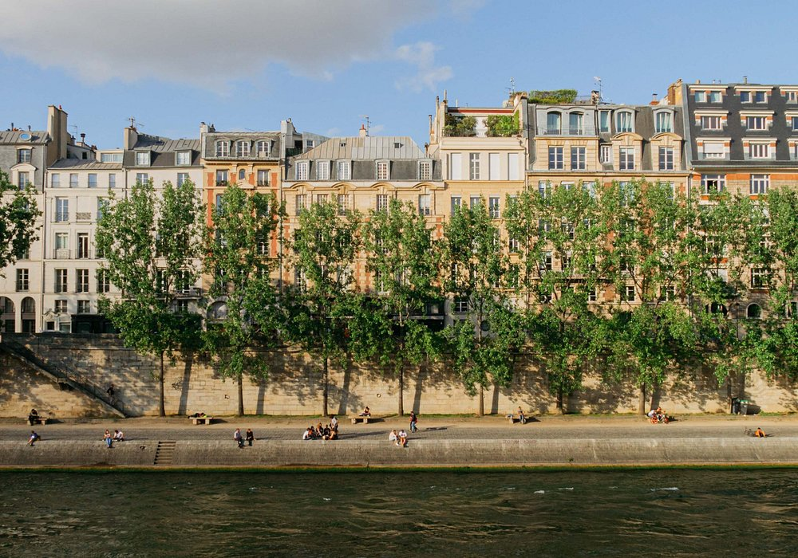

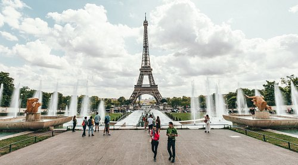
Aucun autre endroit au monde ne fait autant rêver que Paris. La ville séduit par son art, son architecture, sa culture et sa cuisine, mais il y a aussi des merveilles plus discrètes qui n’attendent qu’à être explorées : les ruelles pavées pittoresques, les pâtisseries au coin de la rue et les petits bistrots douillets qui vous invitent à boire un verre de beaujolais. Préparez-vous à vous approprier Paris.
Créez un voyage pour enregistrer et organiser toutes vos idées et les visualiser sur une carte.


Tours et plateformes d'observation, Monuments & Points d'intérêt
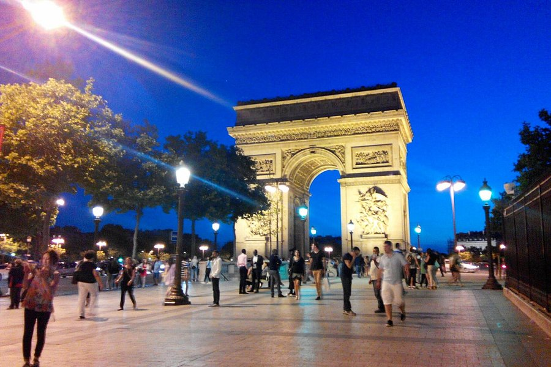
Bâtiments architecturaux, Sites historiques

Bâtiments architecturaux, Musée d'art
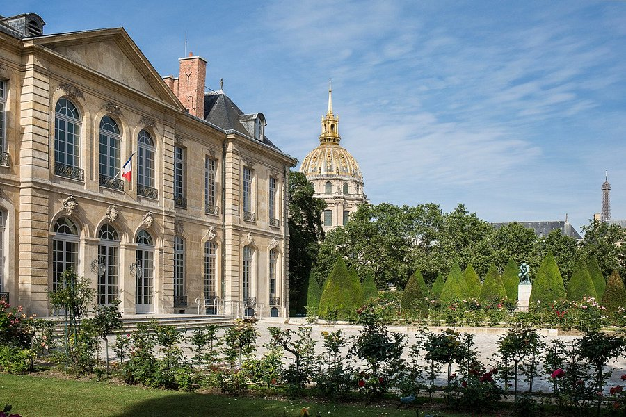
Musée spécialisés

Bâtiments architecturaux, Sites historiques
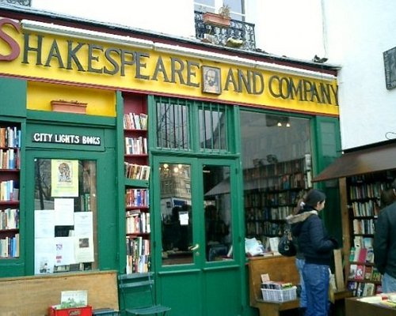
Bibliothèques, Grands magasins
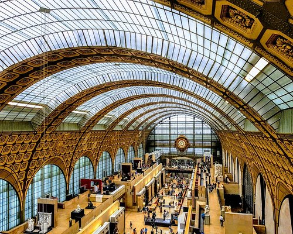
Musée d'art

Antiquaires, Marchés aux puces & Marchés de rue Saint-Ouen, France À 5,4 kilomètres de Paris
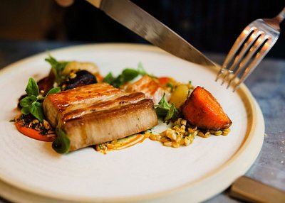
- Française, Européenne, Végétariens bienvenus
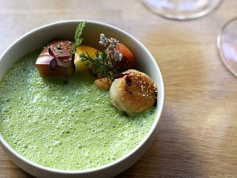
- Française, Européenne, Moderne/p>
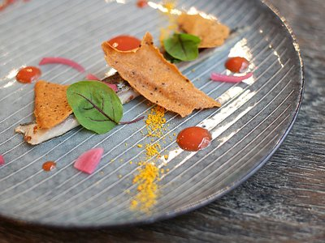
- Française, Européenne, Saine
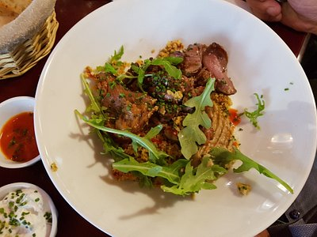
- Française, Européenne, Saine, Moderne
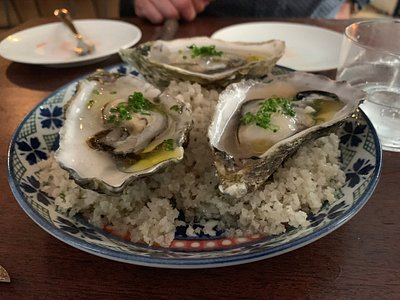
- Française, Moderne, Bar à vins
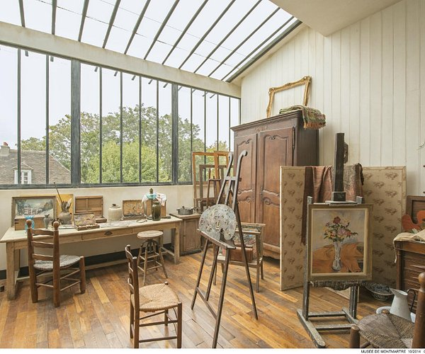
36 articles
Par Eatwith
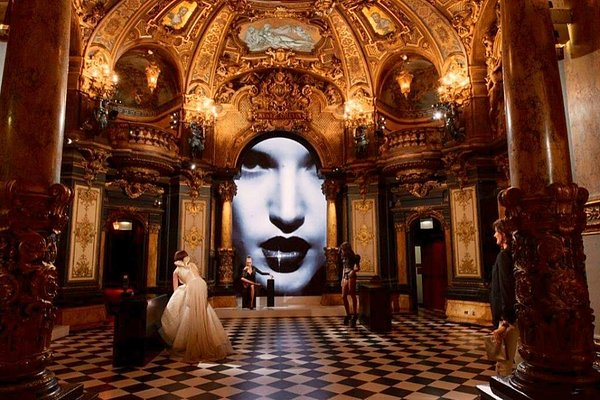
10 articles
Par Topito
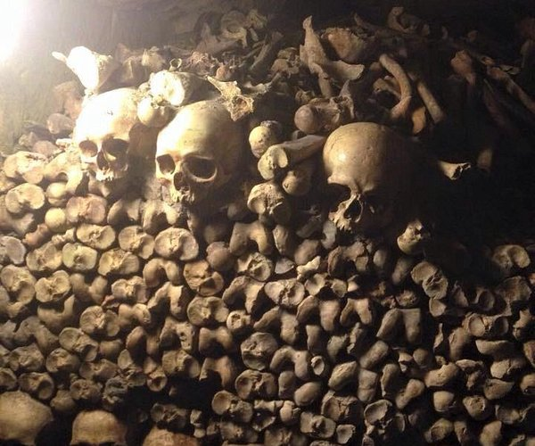
10 articles
Par Topito
- Française, Végétariens bienvenus, Plats sans gluten